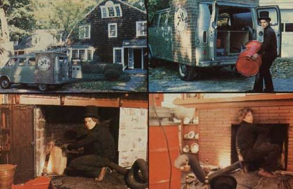

ABOVE: There's really not a whole lot to see when Steve Curtis pulls in to clean a chimney with his August West System. Steve's modified Ford van obviously has something to do with fireplaces ... but the August West System-which can completely clean most flues from inside the house-doesn't give Steve much excuse to ""dance on the rooftops"" the way Dick Van Dyke did in the movie, Mary Poppins. Curtis just unloads his equipment-which includes a special sweeper and flexible fiberglass rods-takes it inside, and goes to work. As the last two photos above illustrate, chimney sweep Steve Curtis does almost all his flue cleaning 'from the bottom"" right through the fireplace.